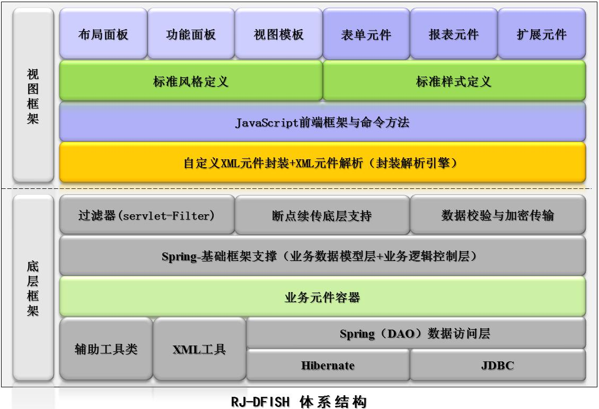

RJ-DFish开发框架简介
平台简介
DFish开发框架是榕基软件在多年的项目软件开发过程中，提炼优化出来的一个基础开发框架。
它主要包括视图面板、模板、布局，以及功能、表单、报表等组件，提供灵活可扩展的封装解析引擎，MVC集成优化框架。
主要采用J2EE及ALL-AJAX技术架构（即应用页面交互全AJAX处理模式），丰富展现富客户（RIA）所带来的所见即所得，
让用户体验更加友好，开发更为高效快捷。

版本历程
- 2005.7
RJ-iTASKV3.0发布，开始开发网络文本会议，由其中的数据交换模式酝酿ALL-AJAX系统体系架构（即页面数据交换全AJAX模式），并着手设计RJ-iTASKV5.0系统框架。
- 2006~2007
设计并完成Xmltmp封装解析引擎。主要利用ITASKV5.0开发工作之外的时间完成XmltmpV1.0，并在部门内部发布XmltmpV1.0版本。
- 2007~2008
结合Dfish相关项目产品研发与产品推广情况，研发团队发现xmltmpV1.0的二次开发缺陷；扩展不够灵活，讨论决定重构Xmltmp，并于2007年10月发布Xmltmp2.0。在此基础上完善了开发框架的Demo包、外部自适应性的相关接口，并定义了相关标准，于2008年1月正式命名为“深海鱼”，简称RJ-Dfish。
（“深海鱼”寓意：深海鱼有顽强的生命力，才能在深海遨游生存；深海鱼能够承受海洋底部如此巨大的海水压力，因为其内部的品质与结构与众不同；深海鱼世面稀有，难以捕捉，其营养价值尤为丰富，所以比较珍贵；深海鱼为了适应黑暗环境，需要自备发光器，自力更生，艰苦适应，才能生存； 深海鱼身上发出的冷光和太阳发出的光最大的不同点，冷光的发光效率特别高，而且光线十分柔和，这是太阳光等自然光无法比的。）
- 2008.3
正式发布RJ-DfishV1.0,开始组织相关培训及后续功能组件的完善维护，尝试性项目产品开发。
- 2009~2010
经过多个项目产品的试用，完善相关功能细节、Bug，在完成“易检运维支撑平台”开发及“RJ-CMS 7X”产品开发后，正式推出RJ-DfishV2.0版本。
- 2011~目前
持续支持、保障更多基于Dfish框架的项目产品开发，持续完善框架组件功能，提供快捷的二次开发集成功能、布局面板，于2011年5月正式发布RJ-DfishV2.2。